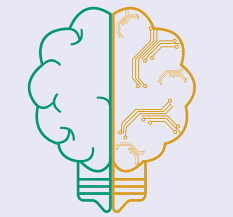
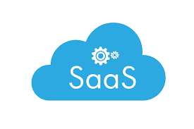
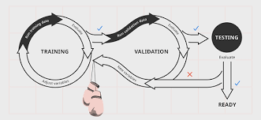

BrainJobs è un servizio cloud di tipo Software-as-a-Service (SaaS) che offre ai
suoi utenti la possibilità di “allenare” modelli di apprendimento automatico, di valutarne le
prestazioni ed (eventualmente) riutilizzarli per effettuare simulazioni.
Il sistema permette agli utenti di effettuare richieste di allenamento o simulazione caricando i
dati insieme al modello o utilizzandone uno già precedentemente allenato e salvato nel
proprio archivio.
In base al linguaggio o al framework utilizzato per il codice del modello,
BrainJobs lancia la computazione in un particolare ambiente di esecuzione che verrà
istanziato “on-the-fly” in un’altra piattaforma cloud di tipo Serverless basata su containers
(es: Apache OpenWhisk, Knative, …).
Gli utenti possono sottomettere più richieste consecutive. Esse verranno gestite in parallelo
in un sistema a coda.
Ogni richiesta di un utente corrisponde ad un task di lavoro (job).
Gli utenti possono controllare lo stato delle loro richieste dalla dashboard di BrainJobs, ed
una volta terminate, visualizzarne i risultati.
Successivamente, il sistema permette di scartare o salvare il modello per utilizzi futuri.


